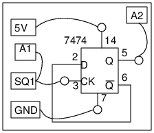

<h2 id="schematic">Schematic</h2>
<hr>
<p></p>
<ul>
<li>In this experiment, we use ExpEYES as a square wave generator and as an Oscilloscope</li>
</ul>
<h2 id="instructions">Instructions</h2>
<hr>
<ul>
<li>Make the connections, on a breadboard.</li>
<li>Set SQ1 to 1000 Hz, watch both A1 and A2</li>
<li>Change the frequency.</li>
</ul>